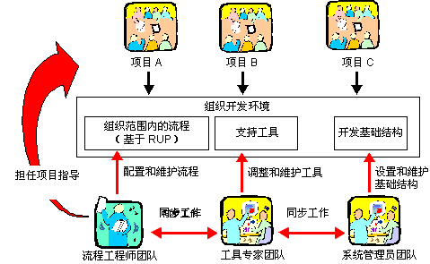

| 概念：开发环境 |
 |
|
关系
主要描述
项目的开发环境软件开发项目的开发环境是项目用于开发和部署系统需要的所有组成部分（诸如工具、指南、流程、模板和基础结构）的术语。所有这些都将表示为 Rational Unified Process 中的工作产品，如下所示：
组织性开发环境通常，开发组织中的不同项目之间存在许多相似性。项目以相似的方式使用同一个工具。 不同项目之间的流程类似，一些指南也可能相同。因此，可从具有开发和维护组织性开发环境的团队中获取开发组织，该开发环境由组织范围内的流程、工具使用和基础结构组成。 此环境团队将拥有包含开发和维护组织范围内流程的流程工程师。如果具有组织范围内的流程，单独的软件开发项目就可以少执行一些流程定制工作，因为组织范围内的大部分流程定制已完成。在单个软件开发项目中，流程工程师将充当导师。 环境团队也可能有设置和维护支持工具的工具专家。此团队的工具专家可帮助单个软件开发项目设置工具。系统管理员也可是环境团队的成员。  流程工程师、工具专家和系统管理员将开发组织的开发环境。 测试环境
在多数情况下，测试环境的需求比基础开发环境更特殊、详细和严格。从技术上来说，测试环境通常没有开发环境完善（硬件需求也更低）。通常会有多个环境需要支持软件测试活动，其中硬件和软件的配置会有所不同，分别表示不同项目干系人的约束。 |

© Copyright IBM Corp. 1987, 2006. All Rights Reserved. |